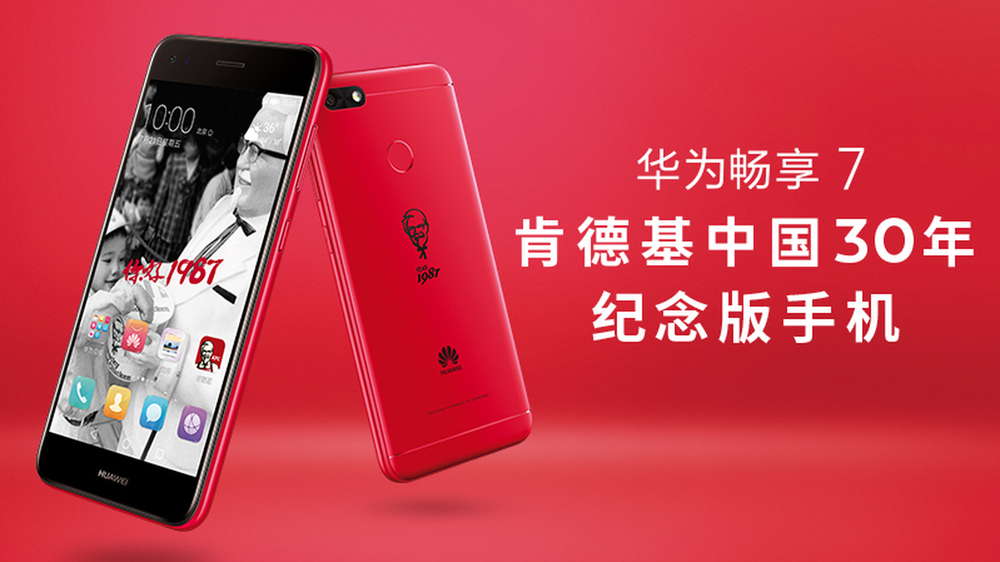

Kentucky Fried Chicken celebrated its 30th anniversary of operations in China by unveiling a limited edition smartphone it had collaborated on with Chinese smartphone maker Huawei.
KFC made the announcement about the partnership with Huawei in a post on its Weibo account on Friday. An accompanying video on KFC’s Weibo account highlighted how far both brands had come since their humble beginnings when they first opened for business in 1987.
KFC opened its first restaurant in China a short distance from the Tiananmen Square in Beijing in November 1987. Today, Yum China, which counts KFC, Pizza Hut and Taco Bell in its stable of brands, has more than 7,600 restaurants in the country.
Huawei — a telecommunications equipment company best known for its smartphones — was founded in 1987 in Shenzhen. The company ranked third in terms of market share in the global smartphone market in the last quarter of 2016, according to 2016.

Launched in tribute to KFC’s thirty-year milestone in China, the commemorative version of the bright red KFC Huawei 7 Plus smartphone came complete with a logo of Colonel Sanders and plenty of pre-installed freebies.
The limited edition model included KFC’s mobile app and 100,000 “K dollars” (virtual credits on the KFC app in China). The phone also provided access to K-music — KFC’s new jukebox function available on the KFC app, trade magazine Campaign Asia said.
A total of 5,000 units of the limited edition phone will be released, KFC said on Weibo. The phones cost 1,099 yuan (US$161.91) per unit and will be available for sale on the fast food company’s Tmall store from July 13.
Quarterly sales at Yum China came in below analyst forecasts in the second quarter this year, with the poorer-than-expected performance of the company’s Pizza Hut brand blamed.